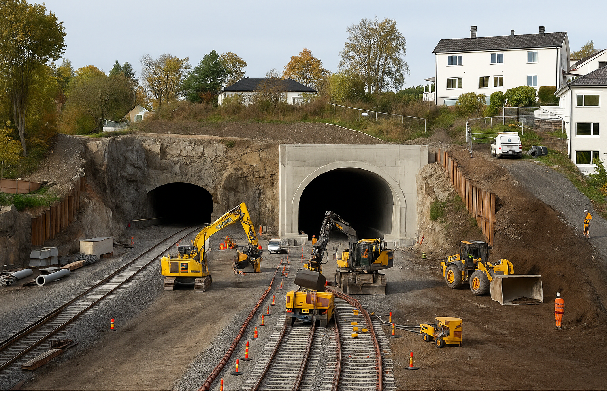

T-banen åpner igjen mellom Majorstuen og Borgen
Etter en intensiv byggeperiode er nedstengningen nå inne i siste fase – og 3. november åpner T-banen igjen mellom Majorstuen og Borgen. Arbeidet er del av det store T-baneløftet som skal modernisere hele Oslos T-banesystem og legge grunnlaget for fremtidens kollektivtrafikk.

Et nødvendig løft for Oslos kollektivsystem
T-banen er Oslos viktigste transportåre, med over hundre millioner årlige reiser. Når strekningen mellom Majorstuen og Borgen nå gjenåpner, markerer det slutten på en av de mest krevende fasene i utbyggingen av Fornebubanen – og starten på et mer effektivt og moderne T-banenett.
Målet med prosjektet er klart: raskere reiser, flere avganger og høyere kapasitet. For å få til det må infrastrukturen fornyes, stasjonene bygges om, og signalsystemet moderniseres. Resultatet blir kortere ventetid, færre forsinkelser og bedre flyt i hele byen.
Det store T-baneløftet
Det store T-baneløftet består av tre store prosjekter som gjennomføres parallelt:
- Oppgradering av Majorstuen stasjon
- Påkobling av Fornebubanen til det eksisterende T-banenettet
- Installering av nytt signal- og sikringssystem (CBTC)
Sporveien og Fornebubanen står bak arbeidet, som skal gi Oslo et mer moderne, effektivt og robust T-banenett. Med nytt signalsystem vil kapasiteten i sentrumstunnelen øke til 36–40 tog i timen i hver retning – nesten en dobling fra dagens nivå.
Arbeidet som er gjort
I løpet av nedstengningen har entreprenørene:
- gravd og sprengt seg frem i fjellet for å utvide den eksisterende Volvat-tunnelen
- erstattet gamle Volvat bru med en ny og solid konstruksjon
- stabilisert grunnen og sikret berget
- bygd nye kulverter og støttemurer
- lagt føringsveier for strøm og etablert nytt dreneringssystem
- rehabilitert betongen i kulverten fra 1930-tallet
Volvat–Majorstuen er et av de trangeste og mest krevende anleggsområdene i hele prosjektet. Arbeidet har krevd nøyaktig planlegging og tett koordinering mellom fagfelt – og det har gitt resultater: over tolv måneder uten fraværsskader blant arbeiderne.
Majorstuen stasjon bygges om
Majorstuen er en av landets mest trafikkerte stasjoner. Den nye stasjonen får større plattformer, flere adkomster og en ny gang- og sykkelbro for tryggere kryssing. Sammen med nytt signalsystem vil dette legge til rette for hyppigere avganger og tryggere trafikkflyt.
Utbyggingen handler også om byutvikling. Området rundt Majorstuen og Volvat vil åpnes for nye boliger, arbeidsplasser og grøntområder. Slik skal T-banen bli en naturlig del av bylivet – ikke bare en transportkorridor, men et byrom.
Fornebubanen – den nye forbindelsen vestover
Fornebubanen er en ny T-banelinje mellom Majorstuen og Fornebu, bygget i samarbeid mellom Oslo kommune og Akershus fylkeskommune. Prosjektet er den største T-baneutbyggingen i Norge siden østlinjene på 1960- og 70-tallet, og vil knytte sammen viktige boområder og næringsklynger vest for byen.
Banen skal bidra til å redusere trafikken på veinettet, fremme bærekraftig byutvikling og gi en trygg og effektiv reisevei for hele regionen. Strekningen blir 7,7 kilometer lang, går i tunnel, og får seks nye stasjoner: Skøyen, Vækerø, Lysaker, Fornebuporten, Flytårnet og Fornebu.

Reisetiden fra Majorstuen til Fornebu blir rundt tolv minutter. Et seksvognstog kan frakte opptil 1200 passasjerer, og med åtte avganger i timen betyr det at opptil 8000 mennesker kan reise hver vei per time.
Hva skjer når?
Byggestarten for Fornebubanen var i desember 2020, og hele banen er planlagt ferdig i 2029. Etter at strekningen mellom Borgen og Majorstuen nå åpner, gjenstår fortsatt arbeid mellom Makrellbekken og Stortinget. Mellom 4.–6. og 10.–12. november vil det være buss for bane etter klokken 21.
Når hele Fornebubanen står ferdig, vil den gi en ny reisehverdag for både Oslos og Bærums innbyggere – med mindre biltrafikk, bedre kapasitet og kortere reisetid.
Byggemetode og sikkerhet
Tunnelene drives med konvensjonell metode – boring og sprenging – før fjellet sikres med fjellbolter og sprøytebetong. Fjellet injiseres (tettes) før sprengning for å unngå innlekkasjer og setninger i nærliggende bygg. HMS står øverst på agendaen, og alle arbeider utføres etter strenge sikkerhetskrav.
Finansiering og eierskap
Byggekostnadene for Fornebubanen er beregnet til 23,3 milliarder 2021-kroner. Prosjektet finansieres gjennom statlige midler, bymiljøavtaler, Oslopakke 3 og bidrag fra grunneiere. Oslo kommune og Akershus fylkeskommune er ansvarlige eiere.
Fornebubanen som samfunnsprosjekt
På Fornebu planlegges det opptil 11 000 nye boliger og 20 000 arbeidsplasser. Samtidig bygges nye næringsarealer og byrom langs hele traseen. Banen skal ikke bare frakte folk – den skal forme byutviklingen og knytte regionen tettere sammen.
Med Fornebubanen får Osloregionen en grønnere og mer helhetlig transportløsning – et prosjekt som vil påvirke både hverdagsliv og bystruktur i flere tiår fremover.
Fakta om T-baneløftet
Åpning: 3. november 2025 (Borgen–Majorstuen)
Lengde på Fornebubanen: 7,7 km
Stasjoner: Skøyen, Vækerø, Lysaker, Fornebuporten, Flytårnet, Fornebu
Reisetid: ca. 12 minutter (Majorstuen–Fornebu)
Kapasitet: opptil 8 000 passasjerer per time i hver retning
Byggetid: 2020–2029
Kostnad: 23,3 milliarder 2021-kroner
Prosjektansvar: Sporveien og Fornebubanen AS
Finansiering: Oslo kommune, Akershus fylkeskommune, staten, Oslopakke 3 og grunneierbidrag
Tusen takk til alle naboer og reisende for tålmodigheten under byggeperioden. Nå nærmer Oslo seg et nytt, moderne og mer effektivt T-banenett – en investering som skal bære byen inn i fremtiden.
← Til forsiden